3D Animated Tour of Peru's Famous Inca Trail. Experience The Wonders of The Inca Trail & Discover Many Ancient Ruins Along The Path.
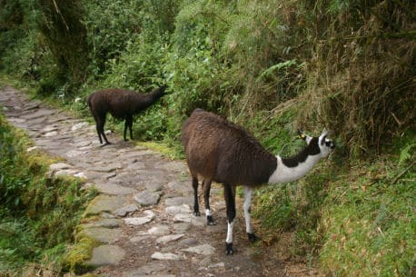
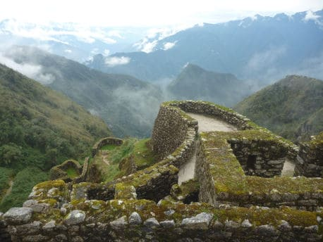
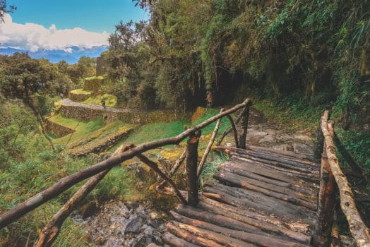
The Inca Trail perfectly blends the majestic beauty of the Andes Mountains into the rich ancient history of the Inca people. Learn how the Incas used the trail and their harmony with nature. See water flow through built-in irrigation channels and share the trail with the many Llamas who call this area home. Experience mountain passes to high-mountain rain-forests, and keep your eyes open for rare Andes animals along the trail.
The Inca Trail spans approximately 26 miles (42 kilometers) of rugged terrain, winding its way through diverse ecosystems and archaeological wonders. As you ascend from the Sacred Valley to the majestic heights of Machu Picchu, you'll encounter dramatic changes in elevation, ranging from around 8,000 feet (2,438 meters) to over 13,800 feet (4,200 meters) above sea level.
The graphic above is the elevation profile of the Inca Trail. The graph was meticulously crafted based on precise GPS data gathered firsthand and represents an accurate account for what you will experience along the trail. Prepare for the challenges and excitement that lies ahead. Download the Inca Trail GPS Route .kmz file used to create this site to view the Inca Trail in Google Earth.
File Download: Inca_Trail_GPS_Route.kmz
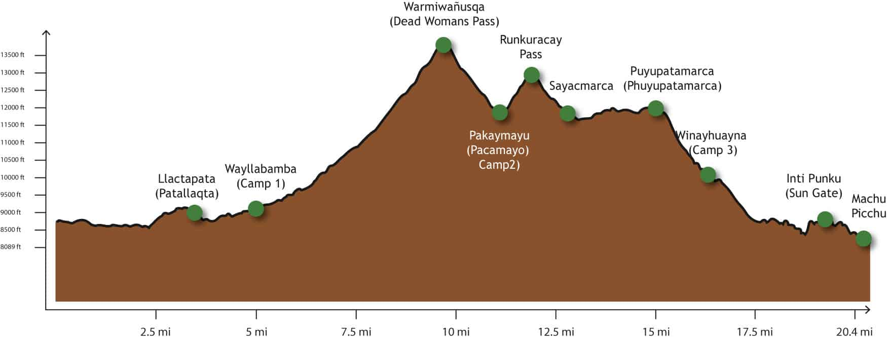
The Classic 4 Day Trail - From Ollantaytambo to Machu Picchu
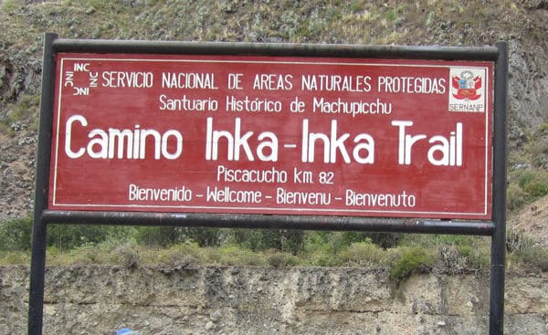
The 4 Day Inca Trail Trek starts with exploring the town of Ollantaytambo. From here you will cross the bridge and officially start the Inca Trail hike. The remainder of the day is a hike along a river to the ruins of Patallaqta and then on to Camp 1 at Wayllabamba.
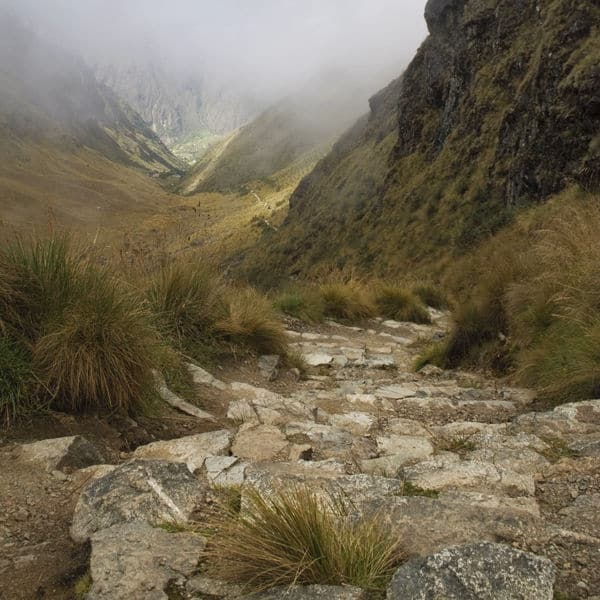
Start day 2 by hiking up to the highest point of the trek - Dead Womans Pass at almost 14,000 ft. Hike along waterfalls and up into the high mountain pass where you are rewarded with endless views of the valley. Finish the day hiking down to your camp in the clouds.
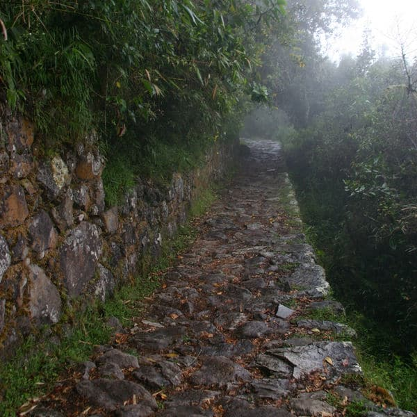
Following in the path of the Incas - Day 3 includes original Inca Trail paved stone, hidden ruins, and some of the best vistas along the trail. Experience the original paved trail and secret Inca ruins that line the trail leading up to Machu Picchu.
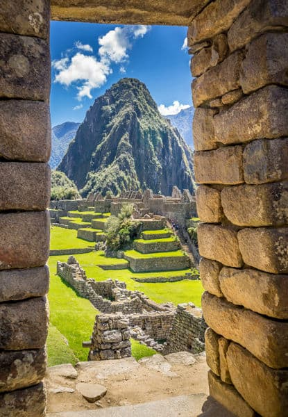
Wake up before sunrise and trek (in the dark) to the Sun Gate for amazing views of the Incan citadel. Enter Machu Picchu from above as the Royal Inca people did - the final hike into Machu Picchu from the Sun Gate is a perfect ending to the 4 day trek and experience to remember forever.
Check out our TOP 3 Tour Providers
Known for Award Winning Inca Trail Programs - G Adventures offers complete end-to-end tour packages. Take the worries away from planning and enjoy the trip.
View G AdventuresFind custom Inca Trail Tour packages at Get Your Guide. Discover tours from private operators and avoid the crowds with personalized, private, and small-group tour options.
View GetYourGuide ToursPlan your Inca Trail trek, read about recent experiences & tour reviews, and book hotels/accommodations. Plan the trip from Lima to Cusco to Aguas Calientes with Trip Advisor.
Inca Trail at TripAdvisor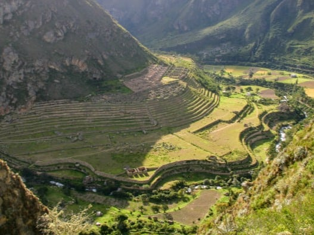
Llactapata
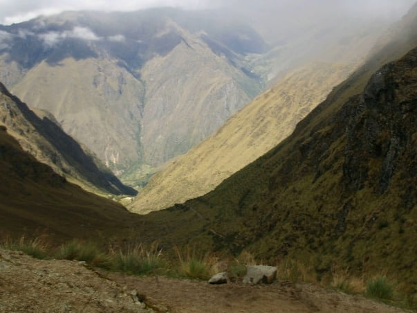
Warmiwañusqa Pass
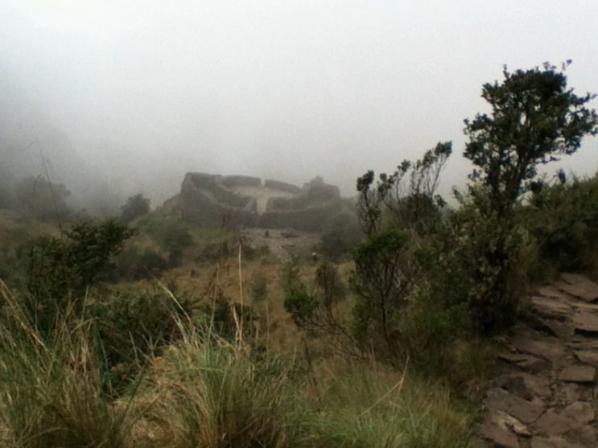
Runkuracay Pass
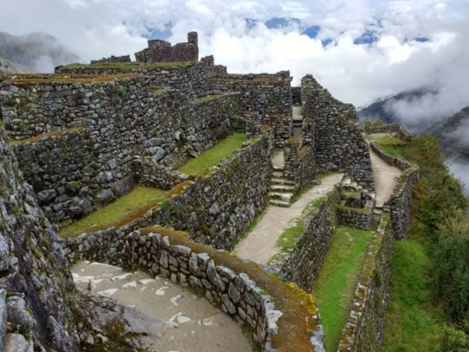
Sayacmarca
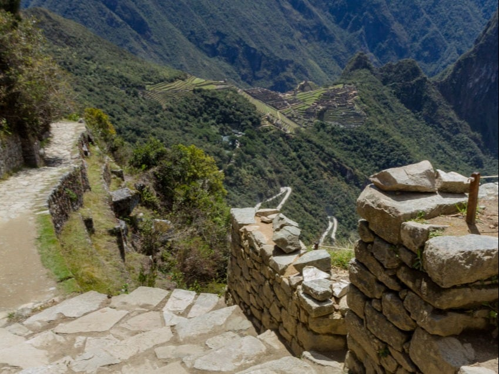
Trail To Machu Picchu
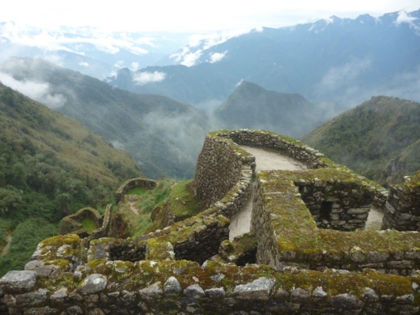
Phuyupatamarca
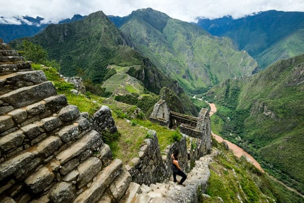
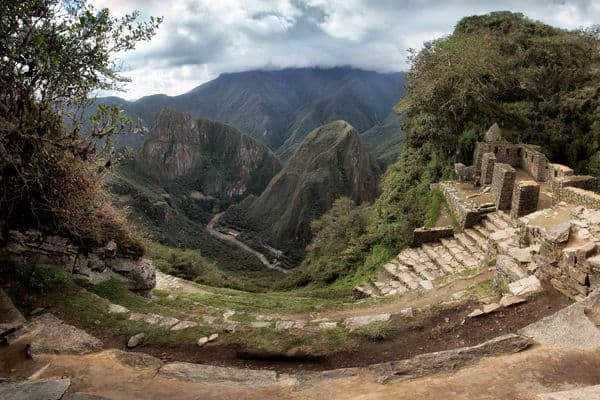
Learn more about how the 3D Inca Trail was created - from plotting the trail on-location with GPS to digitally mapping the trek with technology - Inca Trail 3D Tour is a unique animated visualization of the famous 4 Day Inca Trail from Ollantaytambo to Machu Picchu.
Find out how the data was collected, techniques and mapping technology used to create this experience, and learn more about the people behind the site.
READ MORE